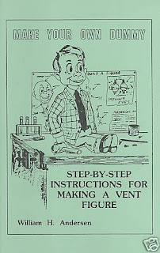

Character sculpting
5/18/2009
{kind=link}

Question: Dear Sir: Does this book teach you to make ANY dummy? I want to make "Slappy".
* * * * * *
Answer: This book contains a complete set of plans for building a professional ventriloquist figure. Illustrated by the author. 40 pages that include diagrams for standard animations (moving mouth and side to side moving eyes, plus several extra effects (eye closers or winkers, raising eyebrows, upper lip movement, stick out tongue, wiggling ears, hair raiser, hand shaker, knee lifter, heart thumper). If you have a workshop and are handy with your hands, you’ll find this book perfect for your needs. Or, if you’re just curious as to what makes a ventriloquist figure "tick" you’ll find this an informative and fascinating read.
However, it does not teach the art of sculpting specific characters. That, in my mind, would take a separate skill in and of itself.
You will find this book for sale here: http://maherbookstore.blogspot.com/ See the Index listing under "Build It Yourself."